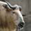
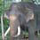
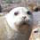
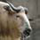
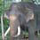
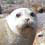
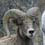
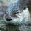
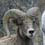
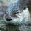

|
We firmly believe
that one of the best things we can do is help
shape the attitudes of the next generation of
citizens so that the human race can reach a
state of sustainable harmony with nature.
|
|

The Canisius
Ambassadors for Conservation are a group of college students dedicated to spreading a positive attitude about conservation to people around the world. To do this, we immerse ourselves in extensive field studies, then return home to serve as public educators at zoos, schools, and in our daily lives!
 






 



|
|
The CAC program is associated with the
Animal Behavior, Ecology, and Conservation program at Canisius College, and also with its masters program in
Anthrozoology.
Connect with us online to hear more about our travel experiences, and view the video content we produce to help spread our love for nature!
|


|